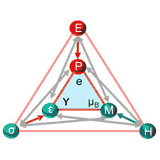

Comparative Analysis of Sense Amplifier Circuits for Hybrid CMOS-MTJ CIM Architecture Q2 Journal
IEEE Journal on Exploratory Solid-State Computational Devices and Circuits (JXCDC), 2026
The paper works as a benchmark guide to answer: Which sense amplifier to choose for which Compute-In-Memory application when working with hybrid CMOS-MTJ circuits?